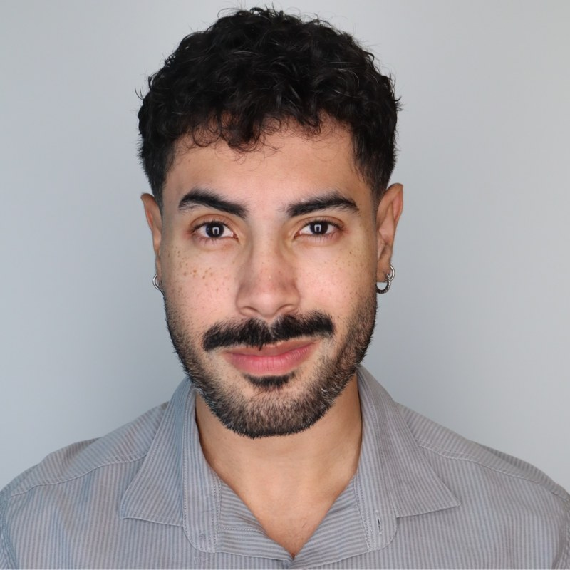

Vinicius Carvalho Lopes
PhD Candidate in Computer Science and Engineering at the University of Notre Dame, working on the software vulnerability lifecycle: detecting, validating, and remediating vulnerability-contributing commits in open-source software.
About me
I am a PhD candidate in Computer Science and Engineering at the University of Notre Dame, advised by Dr. Joanna C. S. Santos. My research sits at the intersection of software engineering and security: I study how vulnerabilities enter open-source projects through vulnerability-contributing commits (VCCs), how trustworthy the datasets that label them really are, and how program analysis and machine learning can catch and remediate security-critical code changes earlier in the development cycle.
My dissertation, Software Vulnerability Lifecycle: Detection, Validation and Remediation of Security-Critical Code Changes, combines empirical studies of VCC dataset quality (including exploit-based validation of SZZ-labeled commits), machine-learning-based VCC detection, incremental static analysis for evolving codebases, and synthetic VCC dataset generation. I passed my candidacy exam in December 2025 and expect to graduate in May 2027.
Before Notre Dame, I earned an M.Sc. in Computer Science and a B.Sc. in Software Engineering at the Federal University of Goiás (UFG) in Brazil, where I worked on low-cost IoT systems for precision livestock farming, systems-of-systems, and software testing, in collaboration with Embrapa and industry partners.
Education
PhD in Computer Science and Engineering
Advisor: Dr. Joanna C. S. Santos.
Dissertation: Software Vulnerability Lifecycle: Detection, Validation and Remediation of Security-Critical Code Changes.
Candidacy exam passed in December 2025.
M.Sc. in Computer Science
CAPES-funded research assistant working on IoT architectures for precision agriculture.
B.Sc. in Software Engineering
National scholarship recipient; CNPq undergraduate research assistant.
Publications [Google Scholar]
Peer-Reviewed Publications
-
A Systematic Mapping Study on Software Testing for Systems-of-Systems
-
A Systematic Mapping Study on IoT-Based Software Systems for Precision Agriculture
-
Using Large Language Models to Generate JUnit Tests: An Empirical Study
-
Smart Farming for Poultry: Leveraging Chicken Raising with Low-Cost IoT-Based Information Systems
-
Security in the Age of AI Teammates: An Empirical Study of Agentic Pull Requests on GitHub
Preprints
Experience
A fuller list is in my CV.
Software Security Research Assistant · University of Notre Dame
- Built a Docker-based exploit validation pipeline for CVEs across Apache Struts, Tomcat, ActiveMQ, and other projects; found a 79.2% false positive rate among 168 exploit-validated VCC labels drawn from six existing datasets (3,105 samples). Published at ESEM 2026.
- Developed a synthetic dataset of vulnerability-contributing commits using large language models, code analysis techniques, and the WALA framework (Java and Python).
- Designed and evaluated machine learning models with novel security features to improve VCC identification.
- Leading an empirical study comparing security-related and non-security pull requests across project metrics, including which CWEs are hardest to patch.
- Building a commit analyzer in Java that uses static code analysis to detect vulnerability-introducing changes and locate them in the codebase.
Research Mentor, Computing Skills Accelerator (CSA) Program · University of Notre Dame
- Mentored two students with no prior research experience; designed and scoped a project with clear goals, timelines, and milestones.
- Guided them in building a synthetic VCC dataset with retrieval-augmented generation (RAG) and LLMs, and supervised their poster presentation at a research symposium.
Embedded Software Intern · Magna International
- Developed and optimized algorithms for transmitting and receiving in-car camera images using two USB cameras and two SK-TDA4VM boards, reducing the delay between camera input and the vehicle display.
- Worked in C/C++ with the VP9, H.264, and H.265 encoders.
Research Assistant · Federal University of Goiás
- Designed and implemented an IoT architecture in C/C++ and Arduino to monitor temperature and humidity and automate climate control in an aviary; deployed it on a production farm and collected real-world performance data over one month. (SBIAGRO 2021) (SBSI 2025) (IEEE Computer 2025)
- Developed a JavaScript web application giving farmers real-time monitoring and remote access to environmental data.
Undergraduate Research Assistant · Federal University of Goiás
- Research on applying ubiquitous computing, software architecture, and computational intelligence to home patient monitoring; presented as a poster at CBIS 2016 (Brazilian Congress on Health Informatics).
- Led a systematic mapping study on software testing for systems-of-systems, published at SAST 2020.
Honors & Awards
- Kylemore Abbey Writing Retreat Award, University of Notre Dame College of Engineering (2026): granted to selected PhD students for a dissertation writing retreat at the Notre Dame Kylemore Abbey Global Centre in Ireland.
- NSF Student Travel Grant to attend the 44th International Conference on Software Engineering (ICSE 2022), Pittsburgh, PA.
- CAPES Scholarship (Coordination for the Improvement of Higher Education Personnel), Brazilian Government: graduate research assistantship at the Federal University of Goiás.
- CNPq Scholarship (National Council for Scientific and Technological Development), Brazilian Government: undergraduate research assistantship at the Federal University of Goiás.
- National Scholarship for the B.Sc. in Software Engineering, Federal University of Goiás.
News
- Presented our paper on the quality of vulnerability-contributing commit datasets at ESEM 2026 in Munich, Germany (LIPIcs vol. 394).
- "Security in the Age of AI Teammates: An Empirical Study of Agentic Pull Requests on GitHub" accepted at Information and Software Technology.
- Our paper "On the Quality of Vulnerability-Contributing Commit Datasets" accepted to the ESEM 2026 research track.
- Selected for the Notre Dame College of Engineering Kylemore Abbey Writing Retreat in Ireland.
- Presented work on test transplantation for ML model-loading code at JAWs 2026, co-located with ICSE 2026, in Rio de Janeiro, Brazil.
- Passed my PhD candidacy exam.
- Mentored two undergraduates in the Computing Skills Accelerator program and taught Python to veterans with the Warrior-Scholar Project.
Research Interests
- Software vulnerability lifecycleHow vulnerabilities are introduced into open-source software, how to detect security-critical code changes at commit time, and how fixes propagate across projects and releases.
- Program analysisStatic, data-flow, and incremental analysis techniques that scale to continuously evolving codebases, using and extending frameworks such as WALA, Joern, SVF, and CodeQL.
- Empirical software engineeringDataset quality, systematic reviews and mapping studies, and exploit-based validation that separates real vulnerability-introducing changes from SZZ false positives.
- AI for software securityML-based VCC detection, LLM-generated synthetic vulnerability data, LLM-assisted CWE classification, and the security of pull requests authored by AI coding agents.
Projects
Exploit-Based VCC Dataset Validation
A systematic review of 38 security-focused studies and a two-tier, exploit-based validation methodology applied to 3,105 commits from six public VCC datasets, with reproducible Docker labs for the validated CVEs.
ArtifactD-VINCI
Machine-learning-based detection of vulnerability-contributing commits with novel security features, trained and evaluated on validated rather than heuristically labeled data.
ProDive
A Java commit analyzer built on incremental static analysis: it re-analyzes only what a commit changes, making vulnerability detection and localization practical at commit time for large, evolving codebases.
SynVCC
Synthetic generation of vulnerability-contributing commits with LLMs, retrieval-augmented generation, and WALA-based code analysis, addressing the scarcity of validated ground truth for training and benchmarking VCC detectors.
Teaching & Service
Teaching Assistant, Programming Paradigms
- Supporting 50+ students: office hours and grading of Java and Kotlin assignments.
Teaching Assistant, Programming Paradigms
- Supported 140+ students, prepared teaching materials, and lectured two classes on Java.
Instructor, Warrior-Scholar Project
- Designed and taught Python classes for military veterans, culminating in a Pandas data project feeding a simple ML model.
Professional Chair, Graduate Society of Women in Engineering (GradSWE)
- Organizing professional development programming for graduate students in engineering.
Student Volunteer, ICSE 2022
- Supported registration, event logistics, and presentation management.